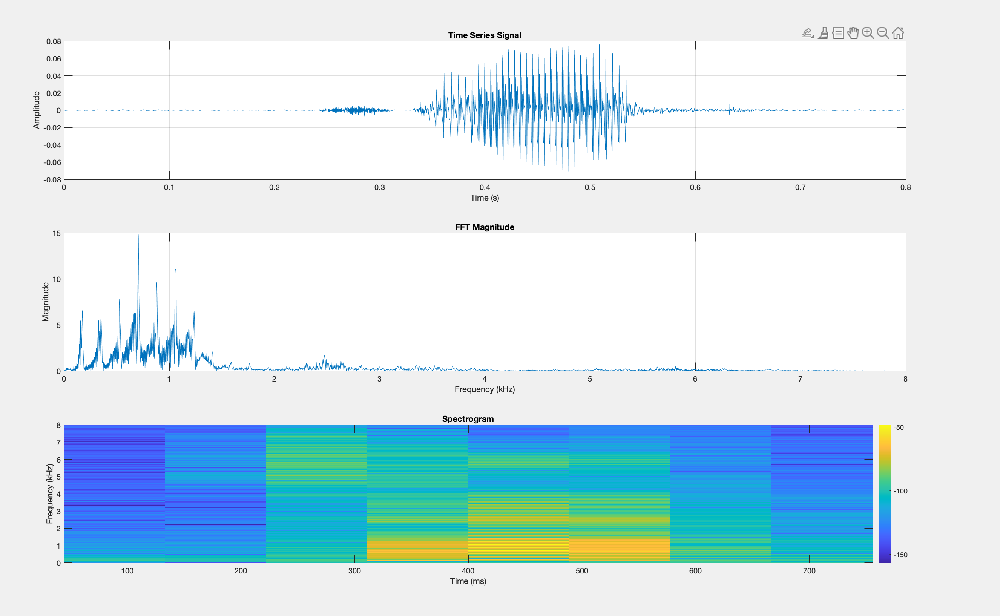
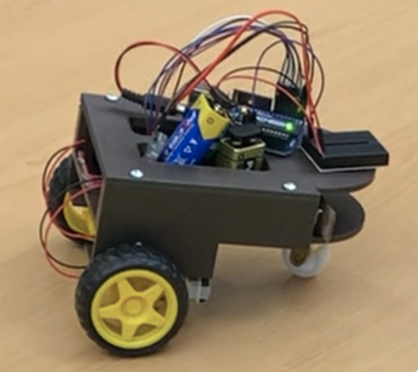

Integration of a Verbal Command Recognition Robot
Problem
As more than one in seven adults in the United States lives with a mobility limiting disability, assistive technologies play a crucial role in supporting greater autonomy. Although voice-enabled tools such as Siri, Google Assistant, and Alexa are widely available, the tasks they perform are primarily digital, and their ability to carry out physical actions rarely extends beyond simple functions like turning lights on and off. This reveals a significant gap in accessible, voice-controlled technologies capable of performing meaningful physical tasks.
Solution
To address this, our group set out to prototype a cost-effective voice-enabled robot designed to move in ways that could benefit individuals with limited mobility.
Contribution
- Fine-tuned a pre-trained deep learning model in MATLAB to classify live audio signals as known verbal commands, background noise, or as unknown inputs by leveraging spectrogram-based feature extraction using MATLAb's Audio and Signal Processing Toolboxes.
- Transmitted recognized command from the audio classification model via an HC-06 Bluetooth module to an Arduino microcontroller, enabling real-time execution of specific responses based on classification model output.
- Collaborated with mechanical engineering to wire and integrate the compiled microcontroller with their 3D-printed chassis and servo-driven wheel assembly.
Deliverables

